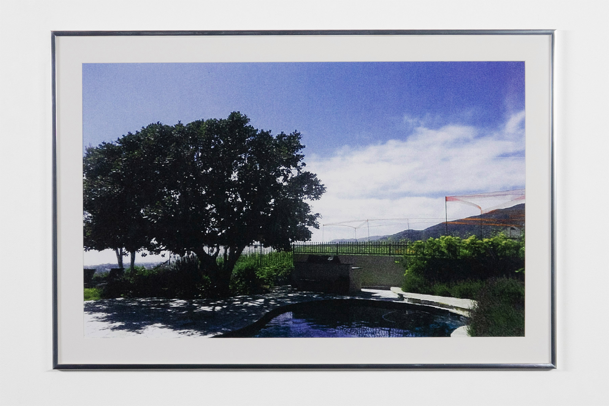

Story Poles (Proposal for New Wight Gallery)
Hardware, lumber, paint, safety fencing, story pole plan. 2025.
According to regulations of the California Coastal Region, all building projects in the City of Malibu are required to install “story poles” outlining the silhouette of an architectural plan on site prior to project approval.
1
Malibu’s Story Pole Policy allows homeowners who register “Primary View Determinations” with the city to prevent proposed construction that obscures their protected views. The code recognizes a private field of view as a primary source of “economic value and/or enjoyment,” and positions one’s right to protect this property interest as superseding the right of another homeowner to develop their property without impediment.
Just as story poles can be understood to represent a real estate development’s promise of future value, Malibu’s view protection codes make clear that these poles also represent the capacity of one’s property interests to erode another’s.
Story Poles (Proposal for New Wight Gallery) presents a story pole plan for the construction of a building that would block the view of all walls inside UCLA’s New Wight gallery. This work asserts that the gallery, like the primary view, is a site in which fields of view are assessed according to their potential to hold economic value. As an architectural plan for a building with no use or exchange value,
Story Poles proposes an anti-architecture wherein construction constitutes the negation of “economic value and/or enjoyment.”
During installation of
Intextuation, story poles were erected throughout the entirety of the New Wight gallery according to this work’s story pole plan. Before
Intextuation opened to the public, co-exhibiting artists requested that the story poles in front of their work be modified or removed due to the visual interference the poles imposed. Deinstalled lumber and fencing piled at the gallery entrance evince
Story Poles’ antagonism to the exhibition structure.

Malibu Primary View Determinations
Archival giclée prints.
2025.
Documentation: D.A. Gonzales
After the United States acquired California with the Treaty of Guadalupe Hidalgo in 1848, the state made over 500,000 acres of public land available for purchase, and required each purchased tract be surveyed by its buyer.
2 Privatization was used to populate California with taxable, non-native peoples and visually assimilate unmapped lands into the state’s registry.
Malibu’s Municipal code represents a continuation of this colonial logic.
Homeowners are entitled to register “Primary View Determinations” recorded in 180º from a single point 60 inches from the ground, either inside their home or within a 10-foot radius of its exterior.
3 These records can be used to prevent proposed construction that obscures their protected views.
The
Malibu Primary View Determinations series reproduces Primary View Determination photographs in Malibu’s records. Though the images are tools in the expansion of property rights, as municipal records they are legally unowned and available in the public domain. As works of fine art,
Malibu Primary View Determinations become property objects eligible for intellectual property claims. The production of these images replicates colonial California’s privatization of public property using the logic of visual appropriation.
7111 Grasswood Ave PVD (with FREEWAY)
Inkjet print on vinyl.
2025.
The Catholic Church’s 15th century Doctrine of Discovery entitled agents of the king of Spain to claim lands occupied by non-Christians “upon arrival,” and granted them religious authority to establish missions in California. During the Gold Rush, American standardization of land survey strategies facilitated the near-complete expropriation of California land from Indigenous peoples.
U.S. Route 101 forms part of El Camino Real, a road connecting the sites of all 21 colonial Franciscan missions in the state. The U.S. 101 Main Street exit leads to the site of the original colonial settlement in the City of Los Angeles — Nuestra Señora Reina de los Ángeles Asistencia, a “sub-mission” to the nearby Mission San Gabriel Arcángel.
The City of Malibu Municipal Code § 17.45 and Story Pole Policy give homeowners the ability to register documentation of private views from their property and use these archived photographs to regulate the development of real estate on adjacent plots.
By granting property owners the power to regulate adjacent property use and development within their field of view, the code extends the colonial logic of the Doctrine of Discovery and the American land survey, which positioned visual documentation as foundational to expropriation.
7111 Grasswood Ave PVD is a vinyl reproduction of the “primary view determination” for 7111 Grasswood Ave, Malibu, CA, installed on an overpass of the U.S. Route 101 Main Street exit ramp. This work publicizes a private view that has been protected by the Malibu local government according to its “economic value.” Locating this document near the site of La Iglesia de Nuestra Señora la Reina de los Ángeles highlights the basis of local legislation on the colonial view-centric logics that facilitated colonization in California.
SETTLER-COLONIAL SIGHTLINES (with Hunter Baoengstrum)
Walkling tour, 7.1 miles.
2025.
City of Los Angeles Bureau of Infrastructure Inspections
Notice of Inspection 53-04272025
DATE: Sunday, April 27, 2025
TIME: Meet 9:00 AM, Walk 9:30 AM using Metro 134 Bus
START AND END LOCATION: Downtown Santa Monica E (Expo) Line Station
This is a formal notification of a 7-mile long walking inspection of past and current Malibu story poles in collaboration with Harrison Kinnane Smith as part of the public programming for “Intextuation,” an exhibition on view at the New Wight Gallery from April 17th to April 25th. The purpose of this inspection is to observe municipal codes that use the visual logic of settler-colonialism to expand private property. Please plan accordingly as there will be many obstructed views along the way. Comfortable walking shoes, sun protection, and theodolites are all highly recommended.
Be aware that this inspection’s start time from Downtown Santa Monica E (Expo) Line Station is a hard deadline as this is when our Metro 134 bus is scheduled to depart. The Bureau highly recommends downloading the official TAP app to easily add Metro fare or purchasing a physical TAP card at the station. Be aware that due to steep grades and uneven terrain along the walk this inspection will unfortunately not be ADA accessible. There will be a short stop for light snacks and hydration around lunch as per Cal/OSHA T8CCR 3395.
Notes
1. “Story Pole Policy” City of Malibu Planning Department. Effective July 1, 2012. ↑
2. Gates, Paul W. “Public Land Disposal in California.” Agricultural History 49, no. 1 (1975): 161. ↑
3. Malibu Municipal Code § 17.45.040(E) ↑